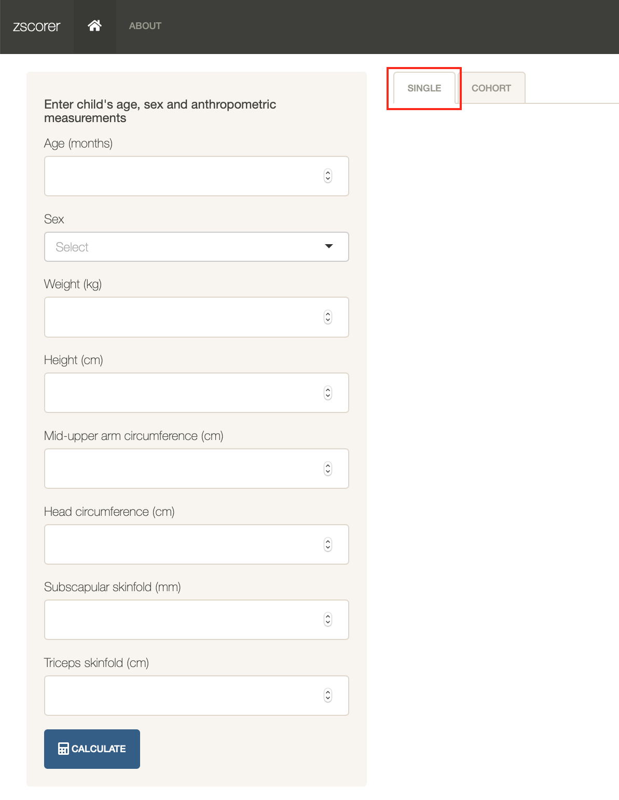
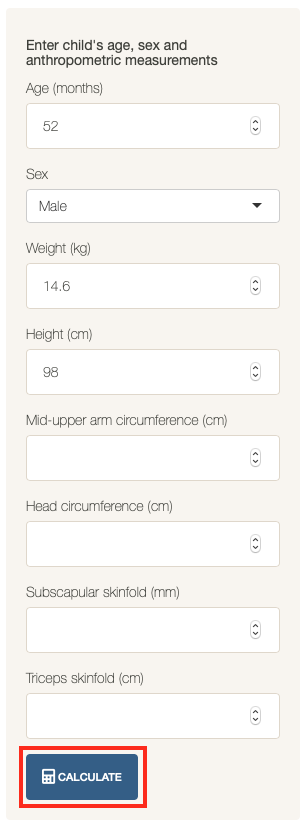
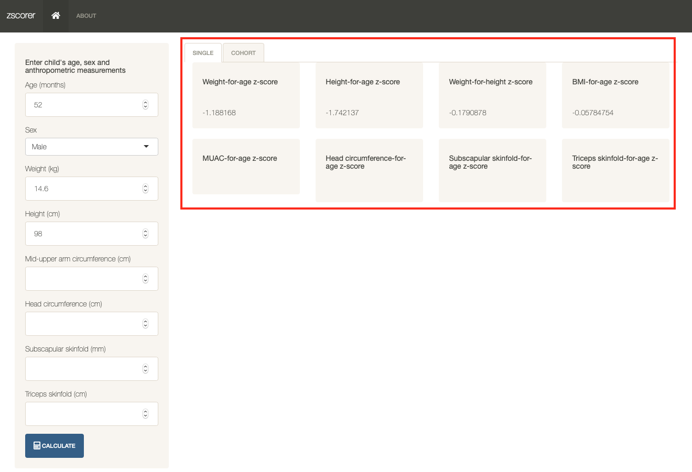
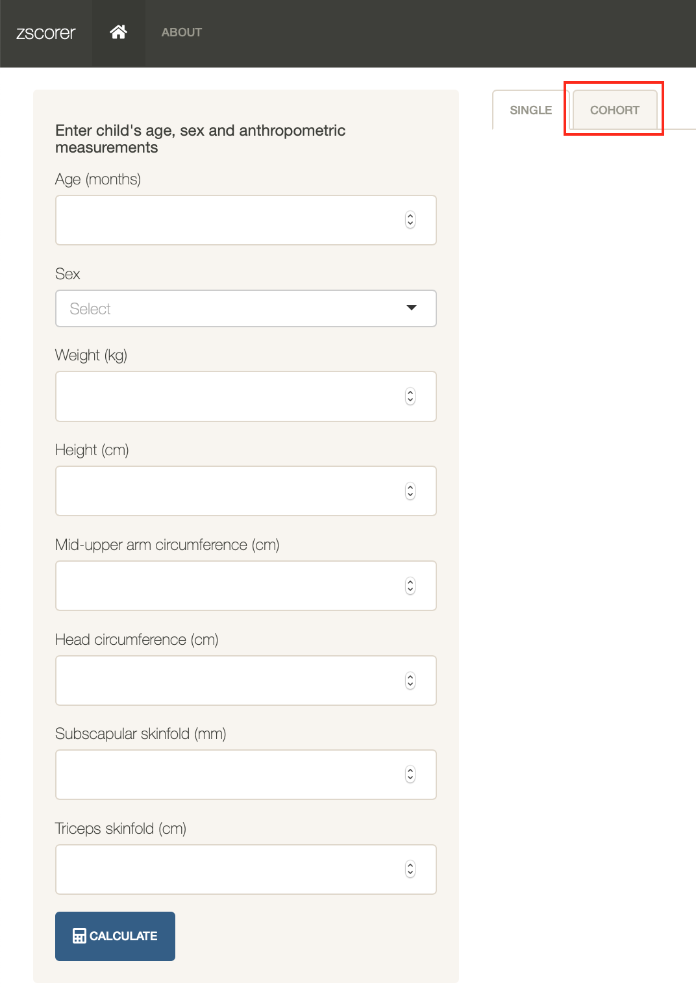
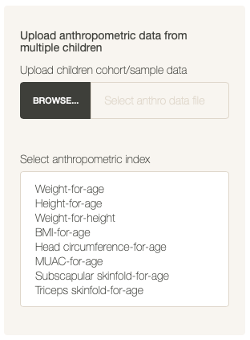
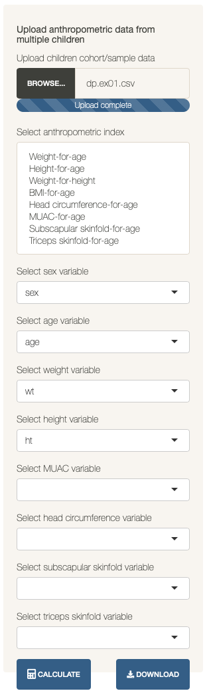

Using zscorer Shiny application
Ernest Guevarra
2022-08-08
Source:vignettes/using-shiny-app.Rmd
using-shiny-app.Rmdzscorer comes packaged with a built-in Shiny
application. The application is initiated by issuing the following
command:
This opens the installed web browser in the user’s device showing the following:

Getting the z-score of a single child
The first (and default) functionality of the built-in Shiny
application is for calculating the z-scores for a single child. This
functionality is accessed by selecting the single option on
the tabbed menu available in the top edge of the application interface
as shown below:

When this functionality is selected, the sidebar menu provides the following options:

In this sidebar menu, the user should enter all the anthropometric measurements available for the child to whom user wants to calculate z-scores of. For the calculation to work, the minimum data needed to be supplied by the user are:
Age;
Sex; and,
At least one anthropometric measurement among weight (kgs), height (cms), mid-upper arm circumference (cms), head circumference (cms), subscapular skinfold (cms) or triceps skinfold (cms).
Please ensure that any anthropometric measurement is supplied in the appropriate units as indicated above.
To illustrate, let’s use the dummy data of a 52
month old male child with a weight of
14.6 kg and a height of 98.0 cm. This
data is typed into the sidebar menu and then click on the
Calculate tab as shown below:

This produces the following output in the main panel of the application:

Depending on the anthropometric measurements supplied, the corresponding applicable z-score indices will be provided. No z-score result will be provided if the required anthropometric measurement is not supplied. In the example above, MUAC-for-age, head circumference-for-age, subscapular skinfold-for-age and triceps skinfold-for-age are not provide as no MUAC, head circumference, subscapular skinfold or triceps skinfold are provided.
Getting the z-score of a cohort of children
The second functionality of the built-in Shiny application is for
calculating the z-scores for a cohort of children. This functionality is
accessed by selecting the cohort option on the tabbed menu
available in the top edge of the application interface as shown
below:

When this functionality is selected, the sidebar menu provides the following options:

In this sidebar menu, the user is expected to upload cohort data of
children with their anthropometric data. The user is also expected to
select which anthropometric indices to calculate. If no anthropometric
indices are selected, no calculations will be performed. A cohort data
can be uploaded by clicking on the Browse button and then
selecting the file with cohort data to upload. Once uploaded, the
sidebar menu will provide the following additional options:

For the zscorer app to be able to calculate z-scores
from the cohort data, the variables corresponding to the required
information needs to be supplied. By default, the application will
search the variable names in the data and pick out typical variable
names for the measurements (e.g., ht or height
or HT or Height or HEIGHT for
height measurements). If the variables are named unconventionally, user
will have to select the variable name for the particular measurement
from the choices. If the measurements are not in the data, then the
variable field should be left empty.
Once the various parameters have been provided, user should click on
the Calculate button which results in the following:

The dataset provides is presented as a table in the main panel but
now with additional fields for the calculated anthropometric indices.
The resulting dataset with the calculated anthropometric indices can
then be downloaded by clicking on the Download button.